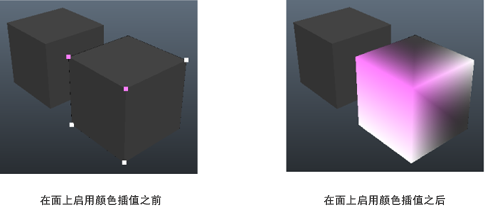

可视化元数据时，如果选择颜色作为可视化方法，则还可以将颜色外推到顶点/顶点面周围的面。此功能可帮助您更好地了解数据是如何在曲面上分布的。
若要启用此选项，请选择“显示 > 多边形 > 元数据 > 可视化元数据”(Display > Polygons > Metadata > Visualize Metadata) >  ，以打开“元数据可视化选项”(Metadata Visualization Options)窗口，然后选择“在面上启用颜色插值”(Enable color interpolation on faces)。
，以打开“元数据可视化选项”(Metadata Visualization Options)窗口，然后选择“在面上启用颜色插值”(Enable color interpolation on faces)。
面上的颜色插值

注： 也可以通过从标记菜单中选择“元数据 > 可视化元数据”(Metadata > Visualize Metadata) > ，打开“元数据可视化选项”(Metadata Visualization Options)窗口。
，打开“元数据可视化选项”(Metadata Visualization Options)窗口。